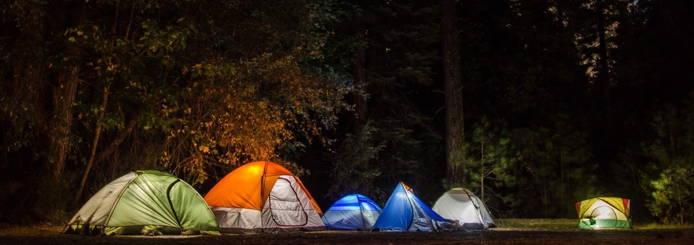
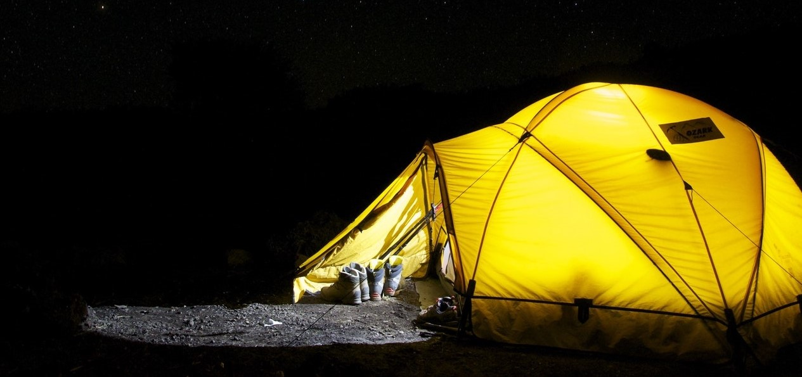
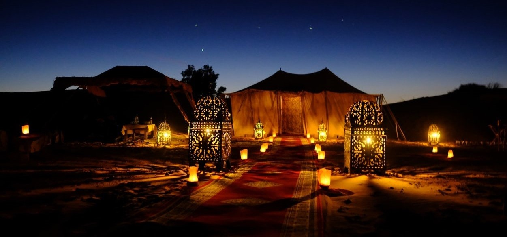

Nossos Campos
Nossos acampamentos são rústicos e se misturam em perfeita harmonia com o ambiente com uma filosofia ecológica completa. O foco principal é a aventura e o conforto. Portanto, mesmo aqui todos os luxos necessários são totalmente servidos por meio de nossos pequenos e íntimos acampamentos móveis.

Barraca
Máximo 4 pessosas
Energia soloar

Tenda luxuosa
Máximo 6 pessosas
Quartos separados
Eletricidade
Lavanderia